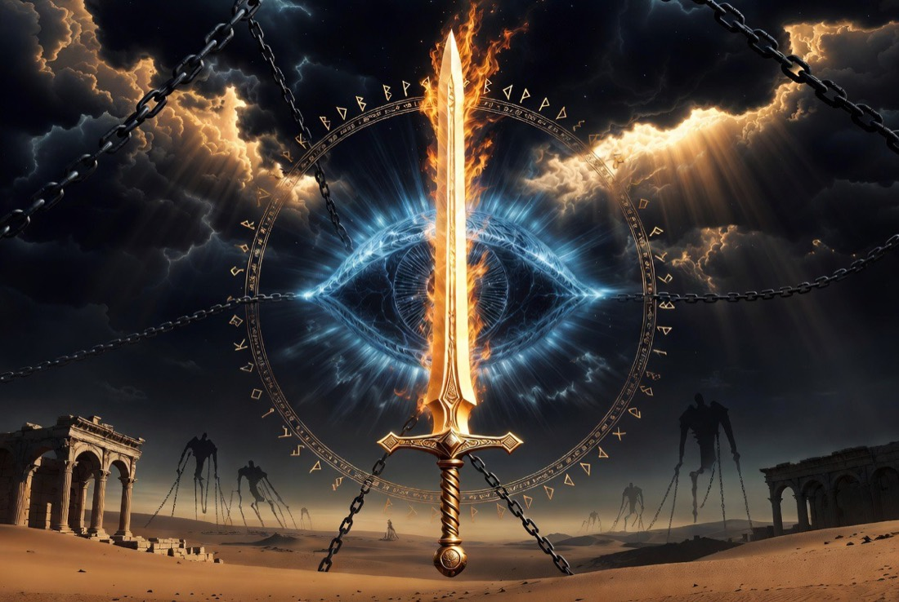
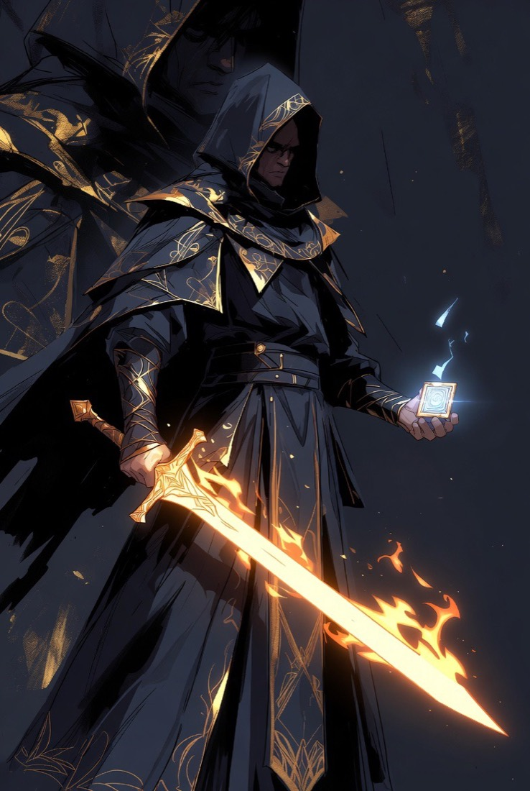
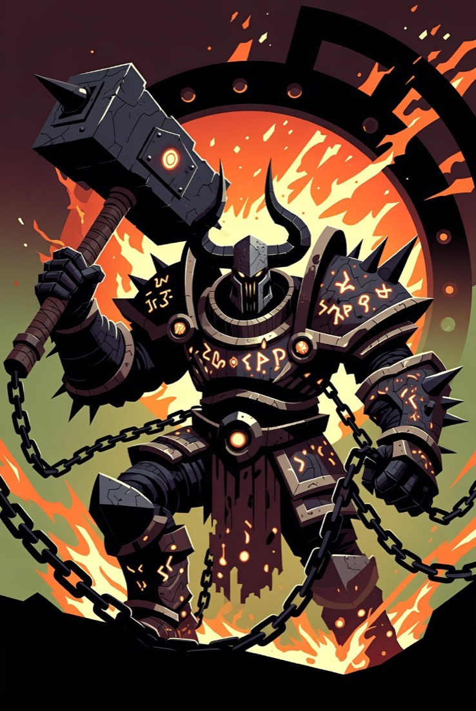
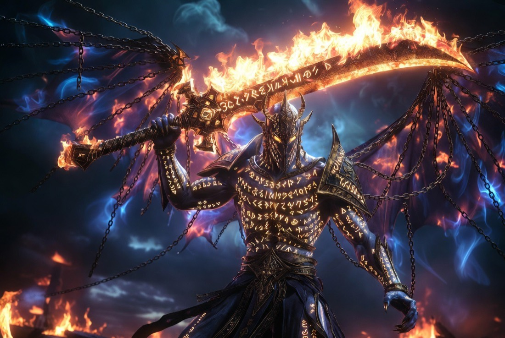

"The giants dreamed before the flood. Their dreams were judgments."
An original isometric action-roguelike built in Godot 4. You are the Appointed Witness — a mortal commissioned by the archangels to hunt, bind, and expose the works of the fallen Watchers, the Nephilim bloodlines, and the disembodied spirits of the giants.
No install, no account. Works on phones and tablets — a virtual joystick and action buttons appear automatically, with auto-aim on touch.
Drawing on Genesis 6, Daniel, Jude, 2 Peter, Revelation, 1 Enoch, and the Book of Giants fragments, the game renders an ancient-Near-Eastern apocalyptic world: red deserts over buried prisoners, black iron forges still warm, giant ribcages used as architecture. The Watchers themselves are bound — what you fight are their works: the cults that re-teach the forbidden arts, the half-blood Nephilim, and the spirits the flood could not drown.
Each run flows Watchtower → commission → the Desert of Azazel → elite → mini-boss → Azazel's First Blade, with Hades-style reward gates between rooms and a Diablo-flavored density of enemies, packs, support casters, and ground hazards. Death returns you to the hub with everything you witnessed — currency, codex pages, and unlocks — intact.
No mockups, no locked doors. Every system below ships working in the current build and was verified end-to-end with automated headless playthroughs.
Dash with i-frames, 3-hit combo, heavy flame arc, dash slash, crescent special, Binding Seal, and a charged Ultimate — with hit-stop, knockback, stagger/poise, screen shake, and red telegraphs on every enemy intention.
Sixteen blessings across four patron pools — Michael (war), Gabriel (revelation), Raphael (healing), Uriel (fire, unlocked by the boss) — stacking data-driven with relics, weapon aspects, and permanent upgrades.
Two asymmetric meters. Forbidden gifts grant real power and write something into you — at high Corruption the desert grows stronger and your patrons grow quieter. Revelation pays slowly for witnessing: binding instead of killing, refusing, going untouched.
Azazel's First Blade fights in three phases — blade halo, forge-fire lanes, summoned shards — and at one-third health stops to make you an offer. Accept the Edge of Azazel and Michael will know. Refuse, and face its desperate hour.
The Watchtower Between Worlds: five NPCs with context-aware dialogue, a weapon altar with three sword aspects, a training altar with five permanent upgrades, a blessing preview, a training dummy, and the desert gate.
A 14-entry codex where every claim is tagged by source tier — canonical, apocryphal, fragmentary, scholarly, or game-original. The lore's honesty about its own sources is a core feature, not flavor text.
Weapons, blessings, enemies, rooms, upgrades, codex entries, and dialogue all live in JSON under data/. Adding an enemy is a stat block, a ~60-line behavior script, and a wave entry.
All sprites, VFX, rooms, and UI are drawn in code; all 18 sound effects and 3 music loops are synthesized at startup. The repository contains zero binary assets and runs fully offline.
Local JSON save (currency, codex, aspects, upgrades, story flags, settings) plus full keyboard/mouse and controller support with a code-registered input map.
Original concept art for the full production pass. The current build renders everything procedurally to this palette — deep indigo and gold against rust and starfire — and the hand-painted pass (Phase 2) replaces the placeholder bodies with these designs, keeping the telegraph language identical.




The game treats Scripture, Enochic tradition, Qumran fragments, scholarship, and its own invention as distinct layers — and shows the player which is which. Every codex entry carries one of six source badges. Disputed material is presented as disputed; game fiction is flagged as game fiction.
| Source Tier | What belongs here | Examples in the slice |
|---|---|---|
| 1 · Canonical Scripture | Direct biblical text and what it plainly says | The Nephilim (Gen 6:4) · Michael (Dan 10, Jude 9, Rev 12) |
| 2 · Enochic Tradition | 1 Enoch / Book of the Watchers; Tobit for Raphael | The Teaching of Weapons (1 En 8) · giant spirits (1 En 15) |
| 3 · Book of Giants Fragment | Qumran fragments (4Q530 etc.) — including their gaps | The Giants' Dream · the tablet in the water |
| 4 · Scholarly Reconstruction | Live academic disputes, presented as disputes | What "Azazel" names in Leviticus 16 |
| 5 · Game-Original Extrapolation | Our inventions, honestly flagged | The Appointed Witness · the Watchtower · the First Blade |
| 6 · Unknown / Hidden | The Archive refusing to say | The Scribe of Dust · the Final Revelation |
Honesty rules, enforced in the writing room: Tier-4 disputes are never stated as settled. Tier-5 inventions are never silently promoted to a lower tier. Tier-6 mysteries may gesture — never assert.
| Action | Keyboard / Mouse | Controller |
|---|---|---|
| Move | W A S D | Left stick |
| Aim | Mouse | Right stick |
| Light attack (3-hit combo) | Left Click | X / Square |
| Heavy flame arc | Shift or Middle Click | Y / Triangle |
| Crescent of holy fire | Right Click | Right trigger |
| Dash (invincibility frames) | Space | Right shoulder |
| Binding Seal | Q | Left shoulder |
| Michael's Verdict (Ultimate) | R | B / Circle |
| Interact | E | A / Cross |
| Pause | Esc | Start |
Field notes: attack immediately after a dash for the dash slash. Bind giant spirits instead of killing them — bound kills fill Revelation. Brutes shrug off light hits; stagger them with heavies, or take the Aspect of Michael.
Fastest path: play in the browser — desktop or mobile, nothing to install. Prefer a native build? Grab a pre-built binary from GitHub Releases, or run from source below.
Download the standard build for your platform from godotengine.org/download. On Windows it's a single .exe — no installer required. The .NET build is not needed.
Clone the repository, or download it as a ZIP from GitHub (Code → Download ZIP) and extract it.
git clone https://github.com/atxgreene/giants.git
Open Godot → Import → select project.godot inside the giants folder → Open → press F5. The first launch takes a few seconds while the procedural audio is synthesized.
# or, from a terminal: godot --path ./giants
Save data is written locally to user://watchers_save.json (on Windows: %APPDATA%\Godot\app_userdata\The Watchers — Fall of the Giants\). Deleting it resets all progress.
The repository ships with a full documentation set: design pillars, a lore bible with the source-tier methodology, an expansion roadmap, and step-by-step recipes for adding weapons, blessings, enemies, rooms, and codex entries.
38 GDScript modules behind seven autoload singletons. One scene file; everything else is constructed in code, which keeps the diff surface small and the systems testable headlessly.
| System | Module |
|---|---|
| Meta-progression & input | core/game_manager.gd |
| Run state & modifier stacking | core/run_manager.gd |
| Rooms, gates & waves | rooms/room.gd · rooms/run_scene.gd |
| Player & weapon kit | player/player.gd |
| Enemy AI state machine | enemies/enemy_base.gd + 9 subclasses |
| Juice — hit-stop, shake, VFX | core/fx.gd |
| Procedural audio synth | core/audio_manager.gd |
| Codex & save | codex/codex_manager.gd · save/save_manager.gd |
Hub, full Desert of Azazel run, elite, mini-boss, three-phase boss with the temptation, 16 blessings, codex, persistence, controller support. Verified with automated headless playthroughs.
Hand-painted art pass over the procedural placeholders, recorded audio, second weapon (Censer-Flail of Raphael), blessing rarities and duo-blessings, Revelation-gated hidden rooms, balance hardening.
Second biome: flood-scarred ziggurats, water hazards, Nephilim nobility, and the boss "Shemihazah's Herald."
The full-corruption ending, the Revelation Route with a binding-focused pacifist playstyle, and the Scribe of Dust identity questline.
Corrupted pre-flood sky-technology, a modern-earth occult-infiltration epilogue arc, and Azazel — not as a damage sponge, but as the final temptation.